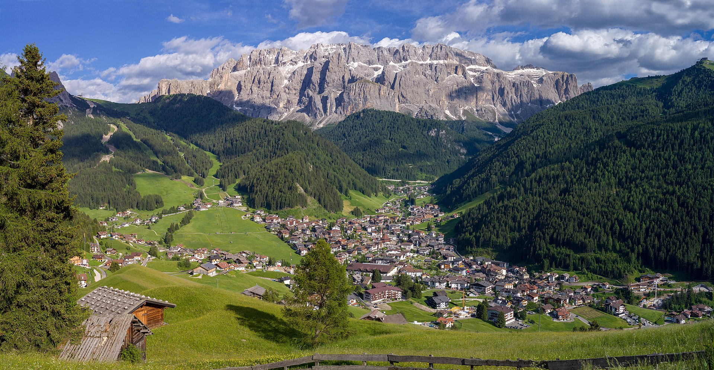
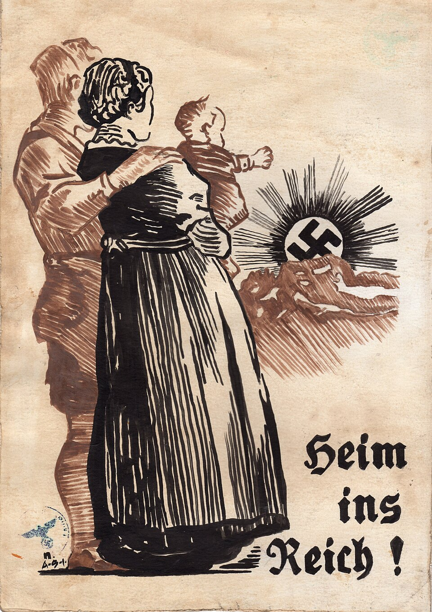
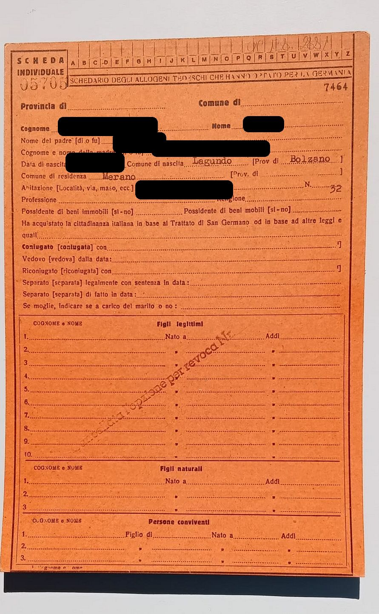
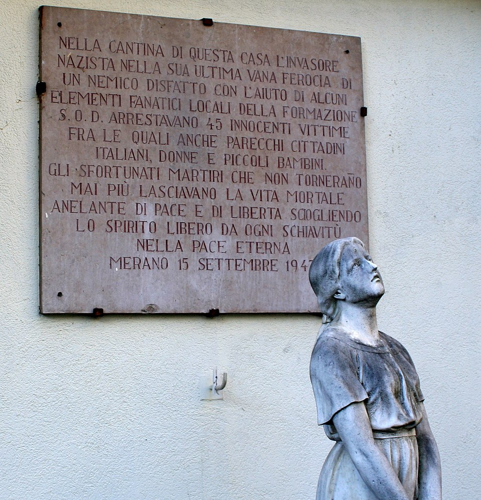
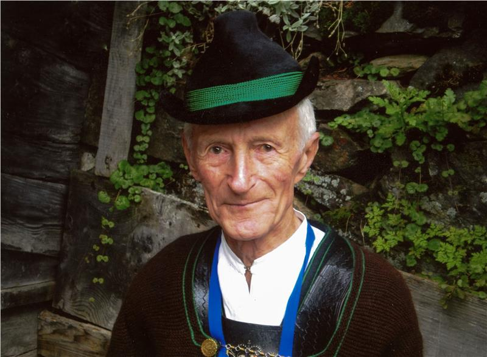
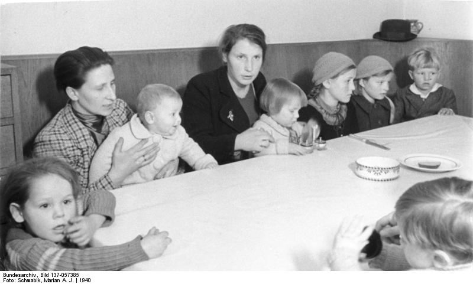
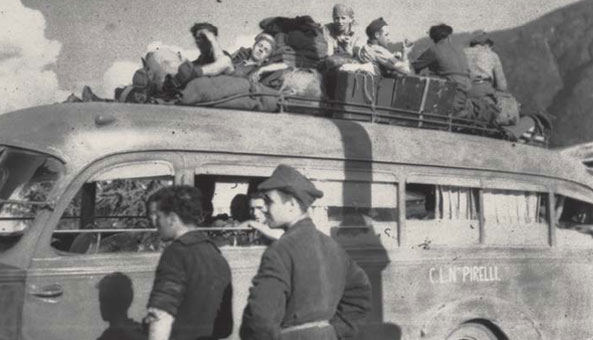

남티롤(Südtirol) 이야기 (6) - 조선인 헌병 보조
게시: 2026-06-25T06:30:29+09:00
1943년 9월, 독일군이 이탈리아를 침공할 때 남티롤도 당연히 점령 대상이 되었습니다. 그때부터 1939년 옵션 협정에서 잔류를 택했던 소위 다블라이버(Dableiber)들에게 고난이 시작되었습니다. 독일군은 현지 친나치 남티롤인들의 도움을 받아, 다블라이버들을 분류해내고 박해했습니다. 다블라이버들은 나찌에 반대하는 민족 배신자로 간주되었기 때문이었습니다. 특히 일부 지역, 가령 돌로미티 산맥 인근의 그뢰덴(Gröden, 이탈리아어로는 Val Gardena) 계곡 지역에 살던 다블라이버들은 아예 독일군의 포로가 된 이탈리아군과 비슷하게 취급되어 체포되었고, 그들과 동일한 포로 수송열차에 쑤셔 넣어졌습니다. 이들은 독일내 강제노동소에서 노역에 시달려야 했습니다.

(그뢰덴, 이탈리아어로는 발 가르데나 계곡의 셸바(Sëlva) 마을 사진입니다. 이 아름다운 곳에서 다블라이버 주민들이 유난히 혹독한 취급을 당한 것은 이 지역이 독일계도 아니고 이탈리아계도 아닌 라딘(Ladin)계 주민들이 많이 살던 곳이라는 점과도 연관되어 있습니다. 라딘계 주민들은 순수 독일인 혈통이 아니라는 점 때문에라도 더더욱 나찌 독일에게 과잉 충성하려는 경향을 보였고, 그래서 다블라이버들을 "배신자"로 낙인찍고 더욱 가혹하게 짓밟았습니다. 심지어 그뢰덴의 친나치 세력 중 일부는 자신들의 뿌리인 라딘어마저 뿌리째 뽑아 버려야 할 존재로 규정할 정도로 광적인 성향을 보였습니다. 원래 일제시대 때도 일본인보다는 친일파들이 조선인들을 더욱 가혹하게 대했다고 하던데, 그런 것은 세계적으로 동일한가 봅니다.) 당장 잡혀가지는 않더라도, 다블라이버들은 온갖 모욕과 폭행, 공포에 시달려야 했습니다. 어떻게 보면 독일군보다 옆집 사는 이주파 주민, 즉 옵탄텐(Optanten)들이 더 무서웠습니다. 다블라이버들이 다수파였다고 해도 독일군이 무력으로 남티롤을 점령한 상태이니 위축될 수밖에 없었는데, 하물며 다블라이버들은 절대 소수에 불과했기 떄문에 더욱 그랬습니다. 원래 사람은 정치적인 동물이라서 자꾸 편을 가르기 마련인데, 피부색이 다른 경우는 말할 것도 없고 종교나 언어를 가지고도 차별을 합니다. 그렇게 겉으로 드러나는 것이 없더라도, 하다못해 출신 지역 같은 사소한 것만으로도 기어이 다른 점을 찾아내어 다수파가 소수파를 차별하는 것이 세계 모든 곳에서 벌어집니다. 남티롤의 독일계 주민들은 같은 종교에 같은 언어에 같은 고향 출신이었지만, 옵션 협정 때 이주를 택했느냐 잔류를 택했느냐에 따라서도 엄청난 차별이 벌어졌습니다.

(1939~40년 경 만들어진 나찌의 남티롤에 대한 선전물입니다. 티롤 전통 복장을 한 가족이 떠오르는 나찌 태양을 바라보고 있습니다. 저렇게 이탈리아놈들과 유태인놈들 등등을 다 몰아내고 티롤 사람들의 티롤을 만들자는 저런 선전에 속았을 뿐이라고 주장할 수도 있습니다만, 사람은 자신의 선택에 책임을 져야 하는 법입니다. 요즘 미국이고 유럽이고 극우파가 점점 득세하고 있습니다만, 그런 극우적인 움직임에 많은 사람들이 반대하는 이유는 단지 정치적 올바름이나 정당성 때문이 아닙니다. 극우든 극좌든, 과거에 한 번씩들 해봤는데 결과가 안 좋았다는 것을 알기 때문입니다. 그러나 인간의 기억력은 보통 2세대 이상 존속되지 않는 법이고, 혐오는 선동에 최적화된 무기인 경우가 많습니다.)

(옵션 협정에 의해 주민들은 1939년 말까지 남을지 이주할지 문서로 선택을 해야 했는데, 그 문서는 고스란히 남아 남티롤 주민들의 운명을 갈랐습니다.) 독일군 침공 이전에도 남티롤의 친나치 옵탄텐들은 이미 VKS라는 조직을 가지고 있었는데, 이들은 독일 점령 이후 공식 무장 기구인 SOD(Südtiroler Ordnungsdienst, 남티롤 민병대)로 재편되어 경찰 행세를 했습니다. 이들은 일제시대 때 일본군 헌병보다 더 지독하고 무서웠다는 조선인 헌병 보조 그 자체였습니다. 좁은 동네인 남티롤에서, 이들은 누가 다블라이버인지 빼곡하게 알고 있었기 때문이었습니다. 이들은 다블라이버들을 ‘발센포켄(Walschenfocken)’이라고 부르며 극심하게 모욕했습니다. 'Walsche(발셰)'는 이탈리아인을 비하하는 남티롤 독일어 방언이며, 'Focken(포켄)'은 돼지새끼를 뜻합니다. 즉, 고향에 남겠다는 이들을 "이탈리아 돼지새끼들"이라 부르며 민족의 반역자로 매도한 것입니다. SOD가 된 옵탄텐들은 온갖 트집을 잡아 다블라이버들을 못 살게 굴었는데, 대표적인 것이 길거리에서 하일 히틀러 경례를 하지 않는다는 이유로 집단 폭행하는 것이었습니다. 트집을 못 잡아도 밤중에 괜히 다블라이버 가족의 집 벽에 총을 쏘아 겁에 질리게 만드는 일도 흔했습니다.

(SOD는 변명의 여지가 없는 나찌 부역조직으로서, 온갖 악행을 저질렀습니다. 남티롤 주민들은 그런 사실을 잊고 싶겠습니다만, 그래도 과거는 반성해야겠지요. 사진에 보이는 명패와 소녀상은 남티롤 메라노(Merano, 독일어로는 Meran)에서 벌어진 유태인 말살 활동과 거기에 SOD가 협력했던 부끄러운 과거를 사실 그대로 기록한 것입니다. 요즘 유럽에서도 극우파들이 극성이라는데, 나중에 그들이 집권하면 저런 기념물 같은 것도 없애버리려고 할까요?) 하지만 가장 직접적인 문제는 징집이었습니다. 원래 옵션 협정에 따라, 1939년~43년 사이에 옵탄텐들에게는 이탈리아군이 징집을 하지 않았습니다. 그러나 다블라이버들은 이탈리아 시민권을 택했으므로, 이탈리아군으로 징집이 시행되었습니다. 그때 징집된 다블라이버 젊은이들은 그리스나 북아프리카 등의 전선에서 싸워야 했지요. 반면 옵탄텐 젊은이들 중 실제 독일로 이주한 젊은이들은 독일군에 징집되어 동부 전선에 파견되는 일이 많았습니다. 가장 좋은 것은 아직 이주를 하지 않고 남티롤에 남은 옵탄텐 젊은이들이었습니다. 이탈리아도 독일도 징집하지 않았거든요. 그런데 1943년 9월 독일군이 이탈리아 북부를 점령하자 이야기가 달라졌습니다. 나찌 독일은 당시 동부전선에서 슬슬 수세에 몰리고 있었고, 병력이 부족했습니다. 이제 옵탄텐이나 다블라이버들이나 공평하게 독일군에 끌려갔습니다. 차이가 있다면 옵탄텐들은 울며 겨자먹기로 순순히 독일군에 입대했다는 것이고, 다블라이버들은 자신은 이탈리아인인데 왜 독일군에 입대해야 하느냐며 반발하고 병역을 회피했다는 점이었습니다. 그렇게 징집을 피해 산으로 도망친 다블라이버 젊은이가 있는 가족은 일종의 연대책임을 물어, 가족 전체를 독일내 강제수용소로 보내졌습니다. 그렇게 가족이 위협받자 산에서 내려와 자수하는 젊은이들도 많았고요.

(그런 다블라이버 젊은이들 중 대표적인 인물인 프란츠 탈러(Franz Thaler)입니다. 1944년 3월, 이제 19세가 된 탈러는 나치로부터 징집 영장을 받자 산으로 도망쳤는데, 가족이 위협받자 결국 자수하여 10년형을 선고받고 다하우(Dachau) 강제수용소에서 학대와 기아를 견뎌야 했습니다. 그는 살아돌아와 회고록을 남겼고, 천수를 누린 뒤 2015년에 사망했습니다.) 결국 1943년부터 1945년까지 약 1년 8개월 동안 진행된 독일 점령 기간은 다블라이버들에게 문자 그대로 지옥과 같은 시간이었습니다. 특히 바로 이웃이었던 옵탄텐 주민들과의 갈등이 가장 견디기 어려운 일이었을 것입니다. 그런데 그렇다고 옵탄텐들도 행복한 것은 아니었습니다. 원래, 남에게 괴롭힘 당하는 것도 스트레스지만 (정말 이상한 성격의 인간이 아닌 다음에야) 남 괴롭히는 것도 스트레스입니다. 더군다나 이미 독일로 이주했던 옵탄텐들은 훨씬 더 험악한 환경에서 개고생을 했었는데다, 가장 중요한 문제인 징집 측면에 있어서는 동일하게, 어쩌면 (북아프리카 전선보다는 동부 전선이 더 끔찍한 상황이었으니) 옵탄텐 젊은이들이 더 많이 죽거나 다쳤거든요.

(1940년 오스트리아, 아니 당시엔 독일의 일부였던 인스부르크에 정착한 옵탄텐 가족들의 모습입니다. 성인들이야 선택을 한 것이고 그 선택에 대한 책임을 지는 거라고 볼 수 있겠습니다만, 아무것도 모르는 애들에게 무슨 죄가 있겠습니까? 세상에는 독일인이 되고 싶어서 독일인으로 태어난 사람도 없고, 중국인으로 태어나기를 선택한 사람도 없습니다. 인종이나 민족, 심지어 국적을 가지고 사람을 차별하는 행위만큼 부당한 일이 없습니다.) 그러다 1945년 5월 나치가 패망했습니다. 이러면서 가해자이던 옵탄텐들과 피해자인 다블라이버 사이에는 대역전이 벌어지게 됩니다. 일단 다블라이버들은 파시즘의 탄압과 나치의 광기를 모두 견뎌내고 고향을 지킨 '도덕적 승리자'로 급부상했습니다. 무엇보다 이들은 이탈리아 시민권을 온전히 유지하고 있었기에, 전후 남티롤 사회의 행정적·정치적 공백을 메울 유일한 주역이 될 수 있었습니다. 그에 비해 옵탄텐들은 하루아침에 '법적 외국인'이자 '무국적자'로 전락했습니다. 전쟁통에 독일로 이주하지 못하고 남티롤에 머물던 12만 명의 옵탄텐들은 이탈리아 정부로부터 언제든 추방될 수 있는 적국민 취급을 받았습니다. 거기에 더해, 독일로 실제로 이주했다가 비참한 난민 신세가 되어 고향으로 돌아오려던 약 75,000명의 귀환 옵탄텐(Rückoptanten)들 역시 국경에 가로막혀 고향 땅을 밟지 못하는 처지가 되었습니다.

(1943년 이전에 이미 독일로 이주했던 옵탄텐 주민들의 신세가 어찌 보면 가장 고달픈 것이었습니다. 이들은 약속과는 달리 수용소 같은 곳에서 지내는 경우가 많았는데, 나찌 독일의 패망과 함께 고향으로 돌아오려 했지만, 이들은 국경에서 '여권 보여달라'라는 이탈리아 경비병들의 요구에 제시할 것이 아무것도 없었습니다.) 이게 만약 동화책 이야기라면, 다블라이버들이 옵탄텐을 따뜻하게 맞이해주고 용서해줌으로써 눈물과 포옹의 감격적인 대화해를 이루면서 해피엔딩으로 마무리될 것입니다. 과연 남티롤의 독일계 주민들을 기다리던 것은 그런 해피엔딩이었을까요?